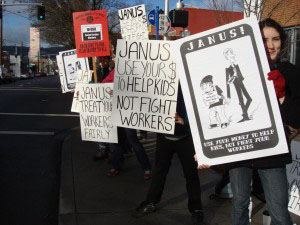
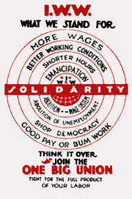

Submitted on Thu, 01/05/2012 - 7:15pm
Cleaners at the Guildhall have been holding a sit in and stopping work since the 22nd of December because of mistreatment and intimidation. Early this morning [4th of January] management called the police, who came and intimidated and threatened the cleaners. The cleaners protested that they were holding a completely peaceful sit-in. They finally left due to police threats to drag them out physically.
The cleaners started organising in the summer, striking against unpaid wages. Since then they have been fighting for union recognition, better pay and an end to bad working conditions. After a new company, Sodexo, took over the cleaning contract, their union rep was suspended and they have been subject to all kinds of intimidation and abuse. The workers say there is one supervisor in particular who is abusive to them and there are currently various complaints by different cleaners against him, but Sodexho are refusing to do anything about his behaviour. Sodexho are trying to drive out the organised cleaners by continually changing their work areas, giving them the worst jobs, increasing their workload and, now, using intimidation and harassment.
Submitted on Tue, 12/20/2011 - 3:12pm
By Phinneas Gage - originally posted at recompositionblog.wordpress.com
Christine braced herself, took a deep breath and then jumped up on to a mail tub and began to shout “help! help! I am being robbed.” A sea of faces stared at her blankly. She got the attention her fellow Letter Carriers, but everyone was looking at her like she was crazy. That was fine, she was acting crazy. “Canada Post is robbing every single one of us, they are robbing people collecting pensions, they are robbing workers who aren’t even working here yet. We need to stand together, Winnipeg walked out and we need to show them that we have their back and will stand with them”.
Some began to nod knowingly; she then explained that workers earlier in the week had walked out in an unlawful strike in Winnipeg over technological change that was causing twelve hour days and massive job loss. She explained that Winnipeg was a testing ground for the new work methods and that the workers in Winnipeg were not just fighting for themselves they were fighting for everyone at Canada Post Corporation. Christine explained the struggle, the stakes, and that our fellow workers in Winnipeg were counting on a show of solidarity from across the country. She may have been a bit dramatic, but she was also being honest, sometimes you have to shout to be heard.
The meeting Christine called was part of a wave of work floor meetings across the city. The wave started at another workplace, Depot Nine. At some of these meetings stewards read statements published by “The Workers Struggle with the Modern Post” a grassroots Postal Workers blog based out of Winnipeg. Some of the meetings were open assemblies open to all employees, where workers could plan their next steps and air grievances. These meetings were part of a very flexible plan, part strategy and part flying by the seat of our pants. The workers led the struggle and often the official union structures were left behind in the dust as workers on the floor took initiative. This wasn’t centrally planned but it didn’t just happen spontaneously. It wasn’t outside and against the union nor was it a struggle within it against some abstract bureaucracy- we were trying something new on our own terms.
Submitted on Mon, 02/14/2011 - 11:41am
Fellow Workers,
Some workers and wobblies in Portland, OR could really use some solidarity in the form of some phone calls.
The Portland branch of the Industrial Workers of the World (IWW), workers at Streetlight and Porchlight youth shelters, and workers form Harry's Mother (two Janus non-profit programs) began picketing in front of Janus Youth Program's main office at 707 NE Couch on February 7th. We are doing so because Janus is in contract negotiations with these two different IWW-represented shops, and in both of those contacts, there is an employee review panel which has been in place for a decade which gives workers the right to contest firings and have a no-cost review of those management decisions. Janus is now claiming they will not sign the contacts with those time-honored panels, and is refusing to give workers their pay increases, until workers accept binding arbitration instead of the peer review panel, which would cost the workers and the union potentially thousands of dollars they don't have.
More info and a press release are available at portlandiww.org
Please call this week (2/14-2/19) in the morning between 9am and 11am west coast time.
Call Janus's Main office, request to speak with Dennis Morrow. .
Email the executive director at dmorrow@janusyouth.org
And. their negotiating team which consists of a program director and a lawyer kdonegan@janusyouth.org, andrew@portlandemploymentlaw.com
We are looking to set a tone that is both polite and firm.
Here is a sample script,
Hello,
This is ________________________. I am calling in support of the union workers at Janus Youth. They deserve both the peer review panel and a decent wage. Do not deny the democratic oversight provided by the peer review panel and replace with a process that could cost workers and the program thousands of dollars. As a non-profit, you should use your money to help youth, not fight workers.
PDX Janus Picket Video & Interview - link
Submitted on Tue, 02/01/2011 - 3:36am
Take action: http://www.citizenspeak.org/node/2128
Dear Friends,
Almost two years ago MPG(Media Planning Group), a global ad agency, began a massive layoff operation with the arrival of a new CEO, Shaun Holliday. Included in the severance contract were two anti-employee provisions. The first took away the employee's right to sue if MPG were to violate any portion of the agreement while the company reserved its right to sue if the employee were to violate the agreement. The second provision restricts the employee from saying anything bad about MPG and at the same time the company can badmouth the employee with impunity. When one of their former employees, Joseph Sanchez, refused to sign the lopsided agreement MPG refused to negotiate a fair severance agreement. To this date the major ad agency hasn't paid a cent to Joseph even though the parent company, Havas, continues to increase its profits.
In less than a year MPG sacked CEO Shaun Holliday. Please take a moment and let MPG know that they haven't finished correcting their mistakes until they make a fair and equitable severance agreement with their employees. Click here to send an e-mail to the CEO and EVP of HR of MPG.
Thank you for your continued support ensuring that working people are respected.
Solidarity,
IWW NYC GMB
For more info on this campaign: False Advertising? MPG Lays Off Workers While Profits Grow
Submitted on Sun, 09/26/2010 - 1:55pm
This article originally appeared here
Dear New Socialist Group,
A friend recently sent me issue 60 of New Socialist. I enjoyed reading it, especially the discussions of unions and union organizers. I plan to read a lot more of your writings as soon as I'm able.
In this letter I'd like to pose some respectful questions and criticisms. I also want to think out some issues I am unclear about and have been having conversations about with some close friends and comrades. Just so we're clear, and since electronic communication makes it much easier to come off polemical when that's not my intention, I mean these as a sort of "can think about this together?" rather than an attempt at the sort of point scoring that sometimes stands in for political discussion. I've only read some of your publications - I plan to read more of them - so if you deal with my questions elsewhere I would love to know. I should also say, I'm a member of the small radical union the Industrial Workers of the World and the small political organization the Workers Solidarity Alliance. My experiences in those organization shape my views, but I write in a personal capacity.
I liked the piece on the comrade who worked for SEIU. It did well in getting at some of the limits of AFL-CIO and CtW unionism. I would like to know, however, if she learned anything positive from doing that work. Perhaps she didn't. My experience working as an organizer had a lot of the negative components that that comrade described and others too, which is why I no longer do that kind of work. I ran into iterations of the same problems when I worked as a community organizer too.)
That said, as much as working as an organizer was a lousy job, I learned a ton doing that job. As much as the bosses were jerks, I learned a lot from following their orders and from the training they provided. I learned stuff which set me up to go on to organize at my own workplaces in the jobs I worked afterward, and this has enriched my IWW activity too, in my opinion. I'd like to know if NSG has anything to say about working as organizers in order to learn things for a while - not as a career path but as an educational detour. Personally, I think more radicals should so then come back to the shop floor.